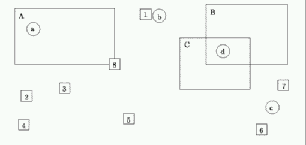

| Mouse Clicks |
A typical windowing system on a computer will provide a number of icons on the screen as well as some defined regions. When the mouse button is clicked, the system has to determine where the cursor is and what is being selected. For this problem we assume that a mouse click in (or on the border of) a region selects that region, otherwise it selects the closest visible icon (or icons in the case of a tie).
Consider the following screen:

A mouse click at `a' will select region A. A mouse click at `b' will select icon 1. A mouse click at `c' will select icons 6 and 7. A mouse click at `d' is ambiguous. The ambiguity is resolved by assuming that one region is in front of another. In the data files, later regions can be assumed to be in front of earlier regions. Since regions are labelled in order of appearance (see later) `d' will select C. Note that regions always overlap icons so that obscured icons need not be considered and that the origin (0,0) is at the top left corner.
Write a program that will read in a series of region and icon definitions followed by a series of mouse clicks and return the selected items. Coordinates will be given as pairs of integers in the range 0..499 and you can assume that all icons and regions lie wholly within the screen. Your program must number all icons (even invisible ones) in the order of arrival starting from 1 and label regions alphabetically in the order of arrival starting from `A'.
Input will consist of a series of lines. Each line will identify the type of data: I for icon, R for region and M for mouse click. There will be no separation between the specification part and the event part, however no icon or region specifications will follow the first mouse click. An I will be followed by the coordinates of the centre of the icon, R will be followed by the coordinates of the top left and bottom right corners respectively and M will be followed by the coordinates of the cursor at the time of the click. There will always be at least one visible icon and never more than 25 regions and 50 icons. The entire file will be terminated by a line consisting of a single #.
Output will consist of one line for each mouse click, containing the selection(s) for that click. Regions will be identified by their single character identifier, icon numbers will be written out right justified in a field of width 3, and where there is more than one icon number they will appear in increasing numerical order.
I 216 28 R 22 19 170 102 I 40 150 I 96 138 I 36 193 R 305 13 425 103 I 191 184 I 387 200 R 266 63 370 140 I 419 134 I 170 102 M 50 50 M 236 30 M 403 167 M 330 83 #
A 1 6 7 C